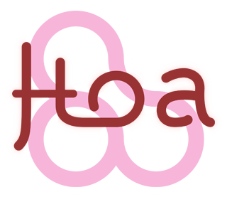

Hoa Apex'13, ouverture

Qui suis-je ?
- Ivan Enderlin
- doctorant en Informatique
(DISC/INRIA)
- leader et développeur de Hoa
- contributeur PHP,
Mozilla,
Debian … open-source
- expert invité au W3C (HTML, CSS et
WebApp)
- @hoaproject,
#hoaproject
Qui êtes-vous ?
- utilisateurs
- contributeurs
- entreprises
- geeks/nerds
- …
- la communauté de Hoa !
Bienvenu :-)
Plan
Historique 2012, les points principaux :
- sources
- documentations
- diffusions
- communauté
- projets
- en avant pour 2013
Sources
Mercurial → Git
- git.hoa-project.net
- un dépôt par bibliothèques (e.g.
Library/Stream.git)
- un dépôt principal en lecture-seule :
Central.git
- tous les autres dépôts ont été migrés également (
W3.git,
Keynote.git, Embryo.git,
Static.git …)
- deux commiters pour l'instant : hywan et
iraphael
Bhoat : notre petit robot qui maintient les sources (synchronisation,
automatic-merge, distribution …)
Distribution des sources
Github :
Composer et Packagist :
- gestionnaire de dépendances
- basé sur Github
Archives :
Bibliothèques
Structure enrichie :
- sources à la racine
Bin/ accessible via hoa
library:commandREADME.md, description et exemplescomposer.json, pour Composer
États : existantes → matures → finalisées
Plus de nouvelles bibliothèques, uniquement de la
finalisation
Nouveau site
- design : simple et élégant
- page d'accueil : description et activités
- plateforme : mobile, tablette, papier …
- preview.hoa-project.net
- nouvelles sections : blog, événement, à propos
Documentations
Amélioré :
- mini-tutoriel
- manuel d'apprentissage : 9 chapitres
- hack book : 10 chapitres
Nouveauté :
- awecode : quand le code rencontre la vidéo
Diffusions
- blog : ≈ 100 lectures dans les 48h
- conférences : AMOST'12, ForumPHP'12 et CSTVA'13
- industrie : VeryLastRoom, Service public de Wallonie …
- recherche : deux articles
- réseau sociaux : ≈ 400 followers sur Twitter
- plus de 1500 installations depuis Composer en 6 mois
Communauté
3 pays : France, Suisse et Belgique (+ 2 pays pour les contributeurs)
Forum :
- fréquenté régulièrement mais peu
- à l'« écart » du site
IRC :
Bonus : pack contributeur
Projets actifs
- le blog du site
- Jekxyl, générateur de
pages statiques basé sur XYL
- Hoathis.net, dépôt pour les
bibliothèques Hoathis (utilisateurs, non-standard)
- Bhoat, améliorer le robot pour plus d'interactivités
- compilateur LESSCSS
Bilan 2012
Très positif !
- plus de contributeurs
- plus de documentations
- plus proche de l'industrie et des outils
- plus d'intérêts
Preuve : cet événement !
En avant pour 2013 !
Poursuites :
- documentation (surtout manuel d'apprentissage et hack
book)
- rolling-release
- finalisation de plus de bibliothèques
Nouveaux travaux :
- ci.hoa-project.net
- Praspel + atoum = ♥
- association officielle
- plus de projets basés sur Hoa
Remerciements & questions
Un grand merci pour votre attention !
Des questions ?
hoa-project.net
Mais … que faisons-nous ici ?